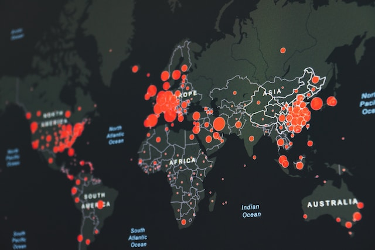

fechar

Photo by Lukas Blazek on Unsplash
Projetos

Agrupamento de Clientes
Python
Machine Learning: Métodos de Clustering para agrupar clientes de banco.

Propagação de epidemias
Python
Complex Networks: Utilização da biblioteca EoN (Epidemics on Networks).
Sumarizador de Textos
Python
Processamento de Linguagem Natural: Utilização dos pacotes NLTK e networkx.